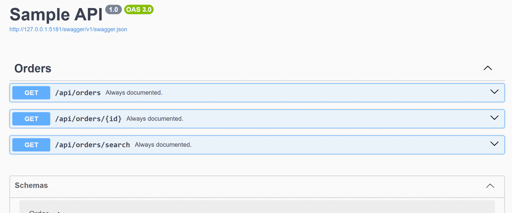

OpenApiFeatureFlags
Feature flags for Swagger and OpenAPI documents.
Mark an endpoint, action, property or parameter with [OpenApiFeatureFlag] and it appears in your generated document only while the flag is enabled. Documentation-only by design: runtime behaviour never changes.
$ dotnet add package OpenApiFeatureFlags.Swashbuckle
The document follows the flag, not the code
With NewCheckout off, /api/orders/checkout is not in the document. With it on, it is. No restart, no rebuild, no conditional compilation.

The running sample with the flags off and on.
Get started in one call
Register the library next to your document engine. Only one line changes between engines.
builder.Services.AddOpenApiFeatureFlagsWithFeatureManagement();
builder.Services.AddSwaggerGen(options =>
{
options.SwaggerDoc("v1", new OpenApiInfo { Title = "My API", Version = "1.0" });
// Register this LAST: it rewrites what the previous filters touched.
options.AddOpenApiFeatureFlagFilters();
});Package: OpenApiFeatureFlags.Swashbuckle. Works on every supported .NET version. Also install OpenApiFeatureFlags.FeatureManagement or OpenApiFeatureFlags.OpenFeature, or bring your own flag source.
builder.Services.AddOpenApiFeatureFlagsWithFeatureManagement();
builder.Services.AddOpenApi(options =>
{
options.AddOpenApiFeatureFlagTransformers();
});Package: OpenApiFeatureFlags.AspNetCore. .NET 10 only. FastEndpoints v8.2 or later runs through this engine.
builder.Services.AddOpenApiFeatureFlagsWithFeatureManagement();
builder.Services.AddOpenApiDocument((settings, services) =>
{
settings.AddOpenApiFeatureFlagProcessors(services);
});Package: OpenApiFeatureFlags.NSwag. The two-argument overload is required: it hands over the real service provider.
Mark what is gated
The attribute works on a controller, an action, a model property or a parameter. Two attributes on one target are ANDed.
[OpenApiFeatureFlag("NewCheckout")] // gates this operation
[HttpPost("checkout")]
public IActionResult Checkout() => Ok();
public sealed class Order
{
[OpenApiFeatureFlag("LoyaltyProgram")] // gates one schema property
public int LoyaltyPoints { get; set; }
}Descriptions too: wrap gated prose in <gate flag="X">...</gate> inside the XML comment (escaped form under NSwag). Read the guide.
What you get
The small surface of one attribute, and the guarantees that make it safe to publish.
Three engines, one attribute
Swashbuckle, the built-in Microsoft.AspNetCore.OpenApi and NSwag, with the same semantics everywhere. FastEndpoints runs through the built-in engine.
Three modes
Remove (default), Annotate (adds x-feature-flag to the operation) and Include. One option switches the behaviour.
Flags from where you already keep them
Microsoft.FeatureManagement, the CNCF OpenFeature standard, or your own IFeatureFlagSource. Azure App Configuration works through FeatureManagement.
Fail closed, fail loudly
An unreadable flag hides the element instead of leaking it, and a canary exception fires before a document silently loses released endpoints.
Build-time safety
A companion analyzer package reports the silent traps while you compile: OAFF1001, OAFF2001, OAFF3001, OAFF5001. How they work.
Invisible when unused
With no attribute in the project, the document is byte-identical. Eight packages ship in lockstep at one version, MIT licensed.
Questions the README keeps answering
Short answers to the things people ask before adopting the library.
How do I hide an endpoint from Swagger when a feature flag is off?
Put [OpenApiFeatureFlag("FlagName")] on the controller or the action, register the library next to your document engine, and the operation leaves the generated document while the flag is off. It returns the moment the flag is on, without a restart.
How do I exclude just one property or parameter?
The same attribute goes on the model property or the action parameter. One boundary: under the built-in engine a minimal API's parameter cannot be gated; under NSwag it can, because the delegate is present as a MethodInfo.
Does this change runtime behaviour?
No, and that is a design rule. Hiding an operation from the document leaves the endpoint routeable; hiding a property leaves it serialised. Runtime gating stays in your application code.
How do I gate part of a description sentence?
Wrap the prose in <gate flag="X">...</gate> inside the XML doc comment. Under NSwag write it escaped, because the reader flattens element markup; the analyzers catch a missed escape at build time.
What happens if the flag store cannot be read?
The library fails closed, and it fails loudly: if a document contains gated elements and no flag could be read, it throws FeatureFlagSourceUnavailableException instead of publishing a document that silently lost endpoints. CanaryEnabled = false turns the exception off.
Can it protect an endpoint from being called?
No. Document gating is not access control: hiding an operation leaves the endpoint routeable. Pair it with real authorization.
Which .NET versions and document engines are supported?
The library targets net8.0, net9.0 and net10.0, and supports Swashbuckle, the built-in Microsoft.AspNetCore.OpenApi (net10.0 only) and NSwag. FastEndpoints v8.2 or later is covered by the built-in-engine adapter.
How is this different from writing my own IOperationFilter?
For one static rule, write the filter. This library is for the whole problem: one attribute with the same semantics across three engines, three modes, gating for operations, parameters, schema properties and prose, fail-closed evaluation, a planning layer with logging, and analyzers for the silent authoring mistakes.
Documentation
Guides, references and the reasoning behind the design, all in the repository.